Incertain (TAF)
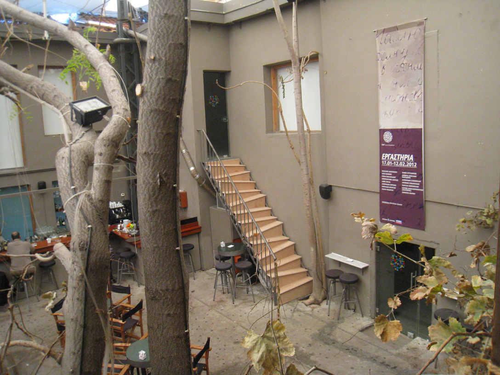
Quelques mots
L’être humain, de par sa nature désire “monter”, se développer. Cette conviction est si intense que jusqu’à récemment, les linguistes croyaient que le mot anthropos provient des deux mots grecs “ano” (Sur) et “throsko” (je regarde). Chaque pas peut être incertain, mais il est en même temps nécessaire, car tout ce qui ne se développe pas, meurt.
D’autre part, chaque marche est un cycle de notre vie qui ne se répète pas. Évidemment, quel que soit le nombre de marches que nous “dépassons”, nous trouvons toujours des similarités avec les précédentes. Nous commençons toujours ayant foi en quelque chose de meilleur, le long du chemin nous rencontrons des obstacles et des difficultés – similaires peut-être avec les précédents et à la fin, une autre marche nous attends, et plus nous marchons mieux, meilleur est notre élan pour affronter la prochaine.
Cependant, la marche suivante sera-t-elle plus facile ou plus difficile? Nous mènera-t-elle plus haut? Nous aimerions bien le savoir! Nous aimerions bien connaître l’avenir afin de mieux nous préparer!
Mais la réponse se trouve derrière nous. Elle se trouve dans nos expériences, qui se répèteront. Et celui qui ne connaît pas son histoire, est obligé de la revivre. Et nous? Est-ce que nous apprenons de notre passé afin de grimper une autre marche, ou nous contentons-nous de “passer” d’une marche à l’autre, répétant les mêmes erreurs dans un cercle interminable?
Un escalier déformé, donc, avec des marches irrégulières, rend de la meilleure manière ce sens d’incertitude et de répétition que possède la vie, dont chaque marche est un cycle de notre vie. Un escalier, par ailleurs, correspond le mieux à notre vie; Nous procédons – plus fatigués sous un autre aspect encore – vers une nouvelle marche.
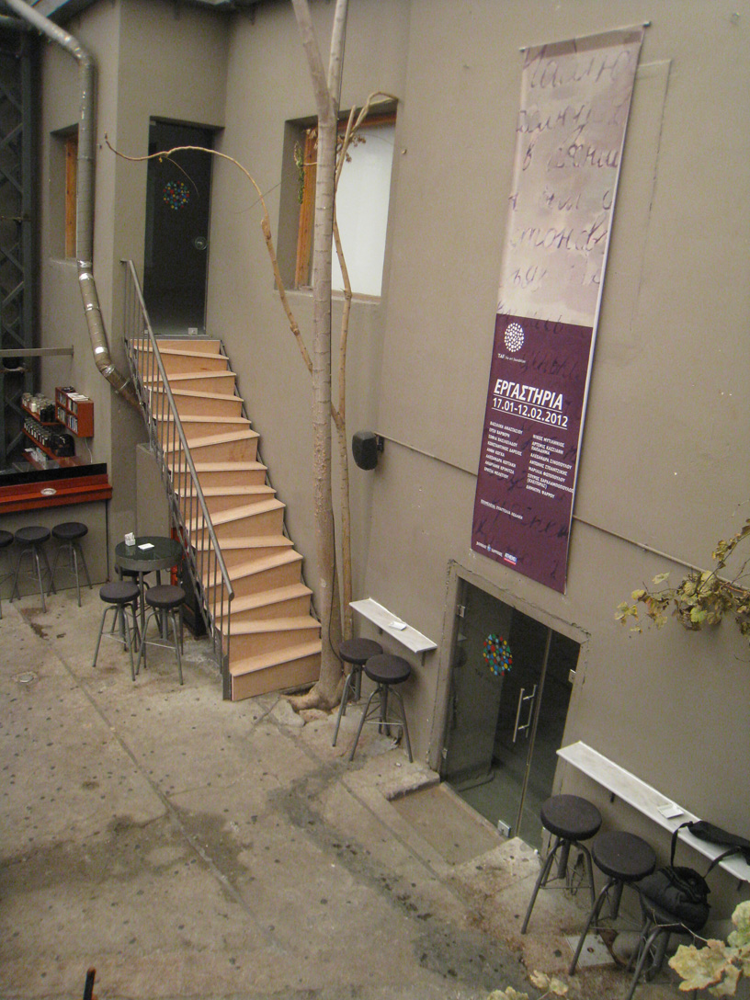
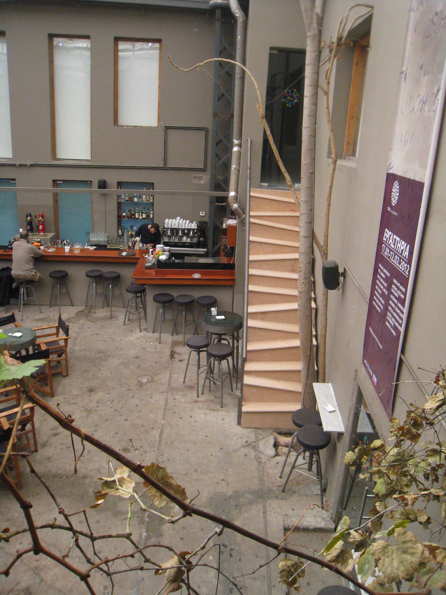
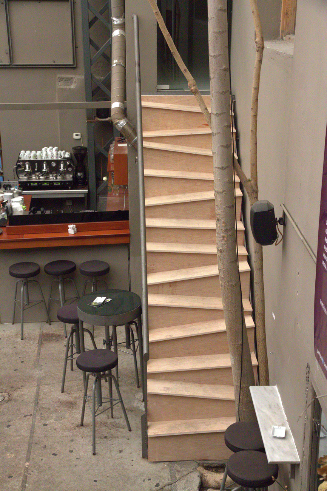
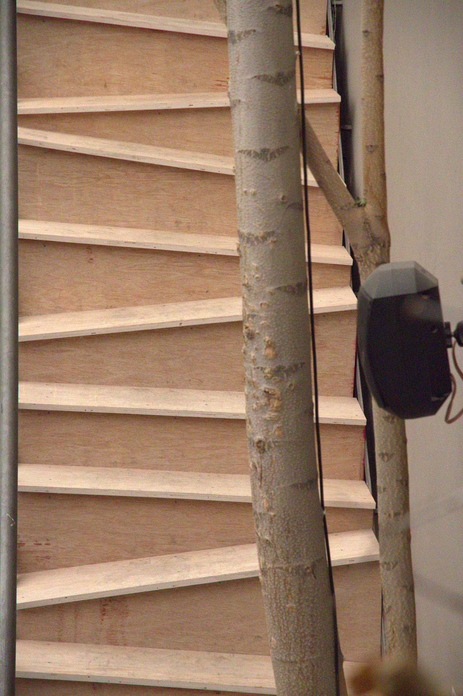
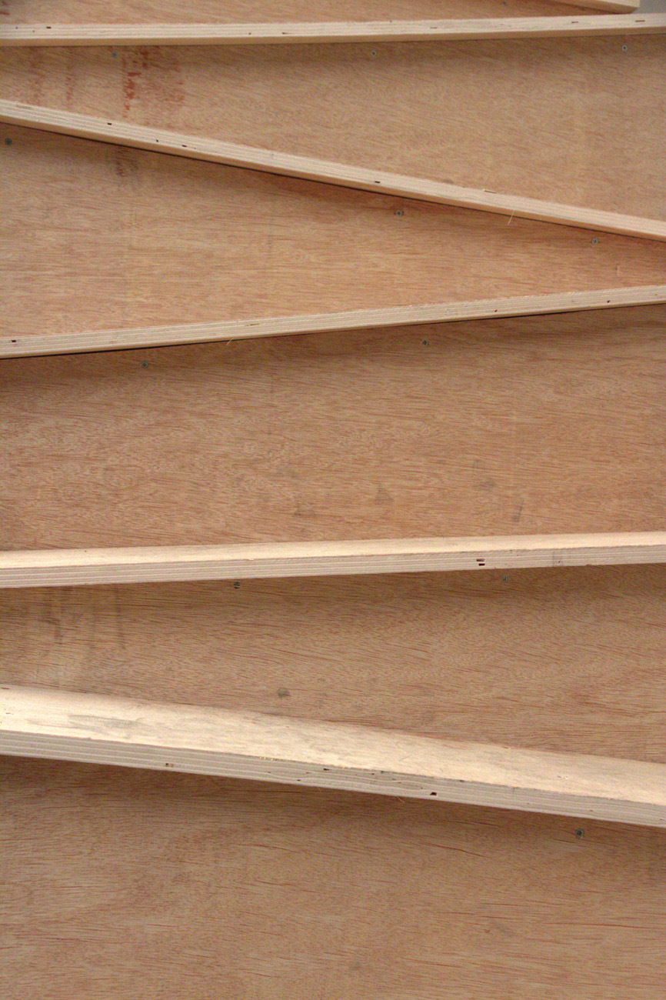
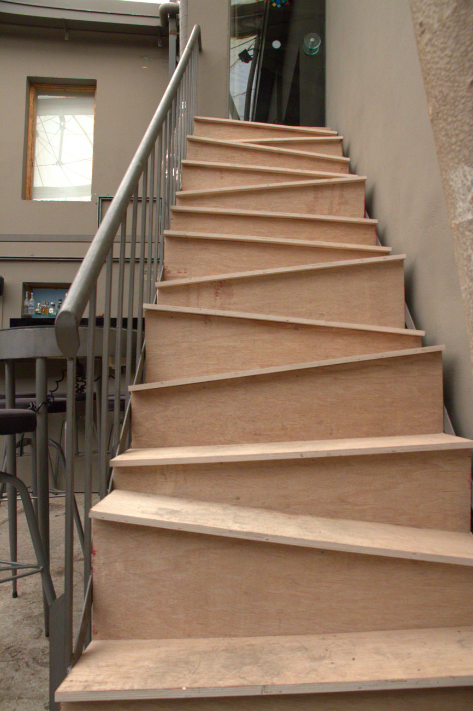
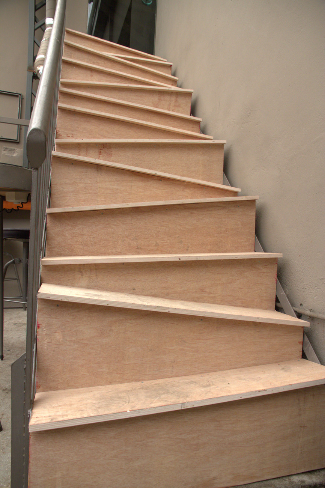
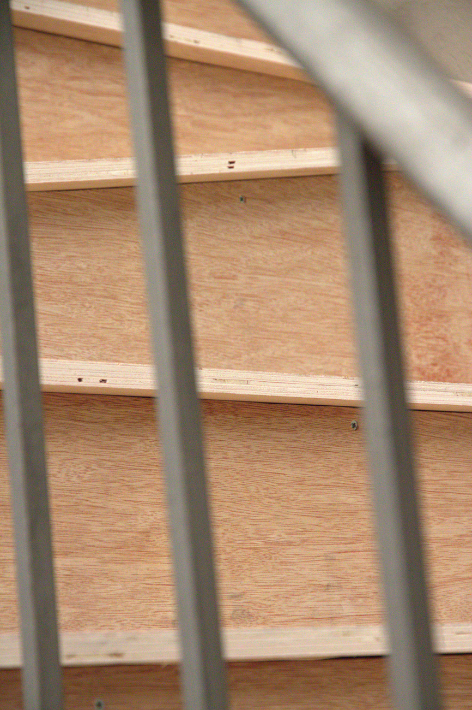
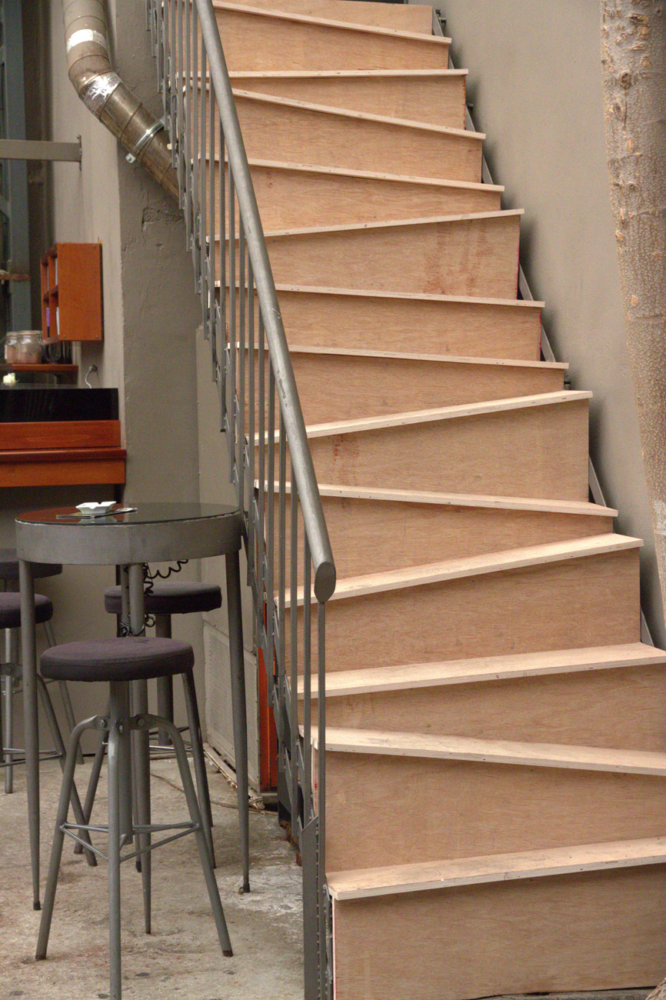
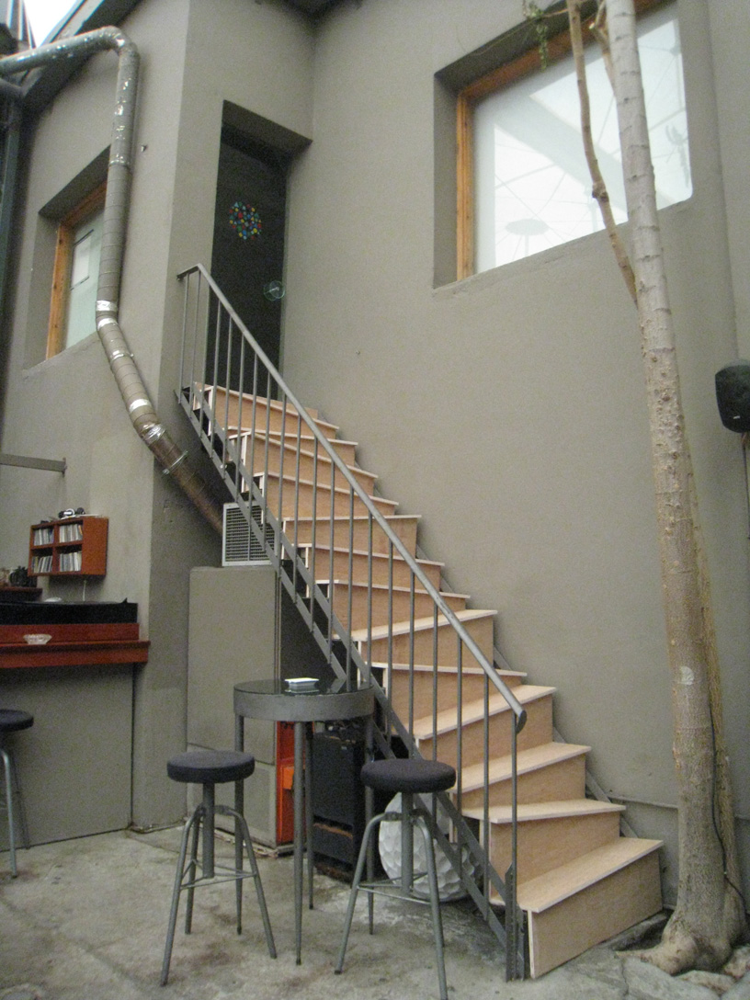
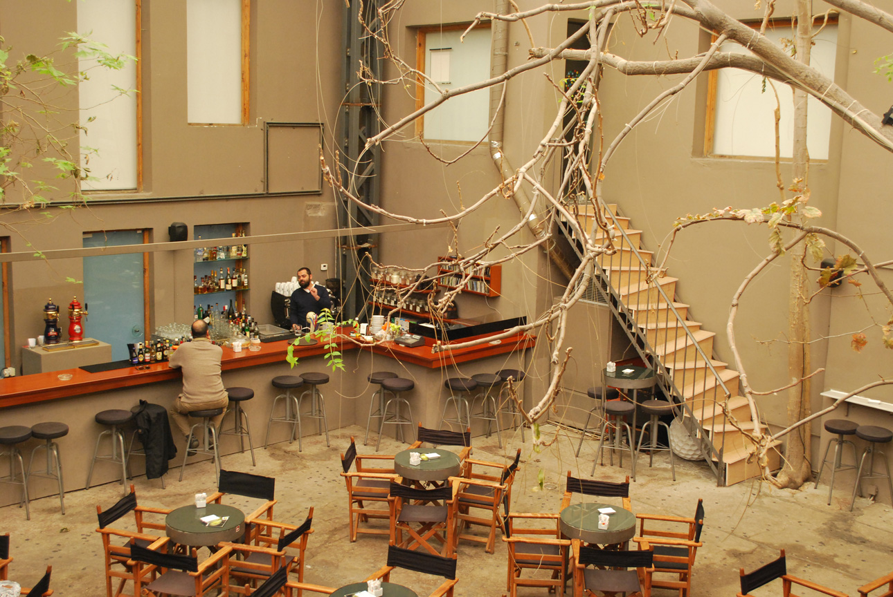
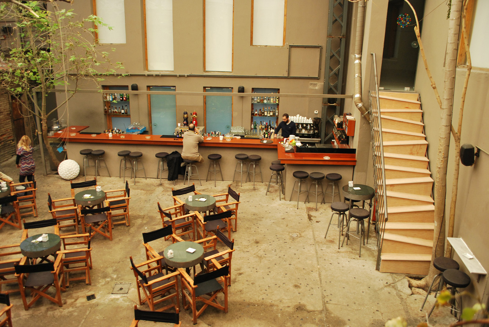
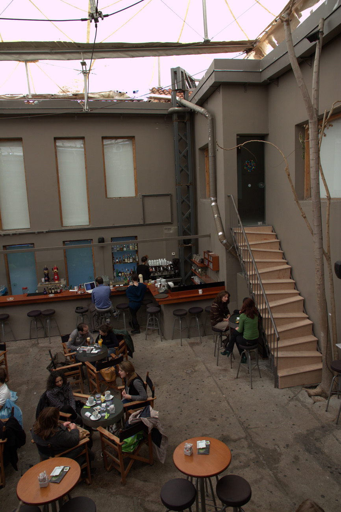
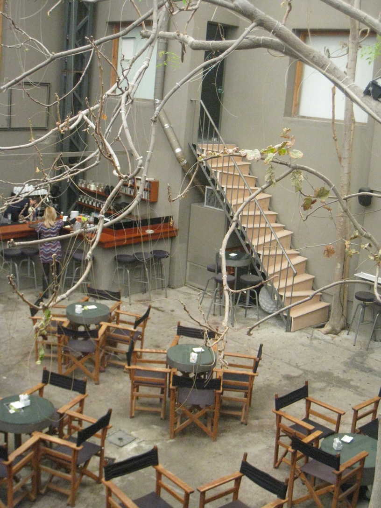